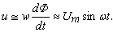
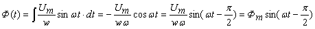

5.4.1.2. Электромагнитные процессы в катушке со сталью
Анализ электромагнитных процессов в катушке со сталью при приложении к ней синусоидального напряжения u = Umsinωt проведем, используя упрощённую схему замещения катушки (рис. 5.30а) с линейным элементом R (резистивное сопротивление обмотки) и нелинейным элементом L. Вебер-амперная характеристика нелинейного элемента подобна кривой намагничивания В(Н), если не учитывается гистерезис, так как L = Ψ / i ≈ w2δ0Sм / lм,
где Ψ = w(Ф + Фp) – потокосцепление катушки.
где Ψ = w(Ф + Фp) – потокосцепление катушки.
Для упрощения анализа будем пренебрегать потоком рассеяния Фp, как и гистерезисом и активными потерями в стали. При возбужднии в магнитопроводе переменного магнитного потока Ф(t) (соответственно потокосцепления Ψ(t) = wФ(t)) в катушке индуктируется ЭДС самоиндукции
eL = –dΨ(t) / dt = −wd[Ф(t)] / dt.
Согласно второму закону Кирхгофа (см. рис. 5.30а) имеем
Ri – eL = Ri + wd[Ф(t)] / dt = u = Umsinωt.
Пренебрегая активным сопротивлением R обмотки, получим

Откуда .
Анализ полученного выражения показывает, что переменный магнитный поток Ф(t) в идеализированной катушке с ферромагнитным сердечником отстает по фазе от приложенного к катушке напряжения u на угол π/2 и является синусоидальным по форме. Амплитуда магнитного потока Фm = Um / (wω) = Um / (2πfw) не зависит от магнитных свойств сердечника катушки – в этом принципиальное отличие магнитных цепей с синусоидальной МДС от магнитных цепей с постоянной МДС. ЭДС самоиндукции eL = –w[dФ(t)/(dt)] = − Umsinωt находится в противофазе к питающему катушку напряжению u, т. е. отстает от него по фазе на угол π, а от магнитного потока Ф(t) – на π / 2.
Графики зависимостей u(t), Ф(t) и eL(t) изображены на рис. 5.30б.